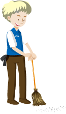

Bonjour chez BAB Cleaning!
Services personnalisés pour chaque besoin : de l'entretien régulier des bureaux au nettoyage approfondi des espaces industriels.
Équipe professionnelle et bien formée, dévouée à fournir des résultats de haute qualité.
L'utilisation des équipements et produits les plus efficaces, pour un résultat impeccable et le respect de l'environnement.
Nettoyage périodique pour bureaux
Assurez-vous de maintenir un environnement de travail propre et organisé dans vos bureaux avec notre service de nettoyage périodique d'entretien.
Nettoyage en profondeur
Obtenez un niveau supérieur d'hygiène et de propreté avec notre service de nettoyage en profondeur.
Entretien de chantiers de construction
Assurez-vous de maintenir un environnement sûr et propre sur vos chantiers de construction avec notre service d'entretien spécialisé.
Nettoyage final du chantier
Confiez-nous la dernière étape du nettoyage de votre projet de construction. L'expérience de nos équipes peut apporter de l'éclat à vos projets